| Nombre | Posición | Edad | Bibliografía | Portada |
|---|---|---|---|---|
| Allen Peter | Defensa | 30 |
Allen Peter es un defensa sólido que aporta experiencia y orden en la zaga de Islas Salomón. |
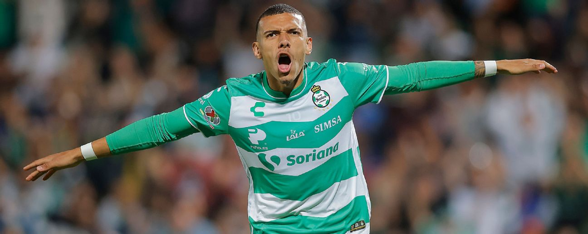 |
| Loea Taisara | Defensa | 36 |
Loea Taisara es uno de los jugadores veteranos del equipo, líder defensivo con gran recorrido internacional. |
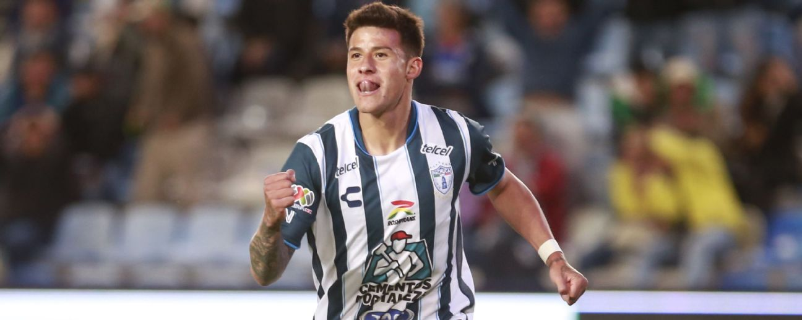 |
| Calvin Ohasio | Defensa | 25 |
Calvin Ohasio es un defensa joven con fuerza y proyección, considerado futuro referente en la selección. |
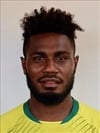 |
| Javin Alick | Defensa | 22 |
Javin Alick destaca por su rapidez y capacidad para anticipar jugadas en la línea defensiva. |
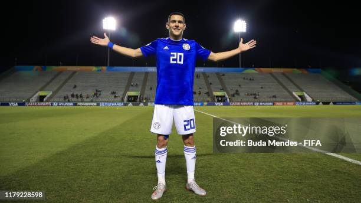 |
| Javin Wae | Defensa | 22 |
Javin Wae es un jugador polivalente que puede desempeñarse en varias posiciones defensivas. |
|
| Prince Tahunipue | Defensa | 30 |
Prince Tahunipue es un defensor fuerte y experimentado, clave en la estructura del equipo. |
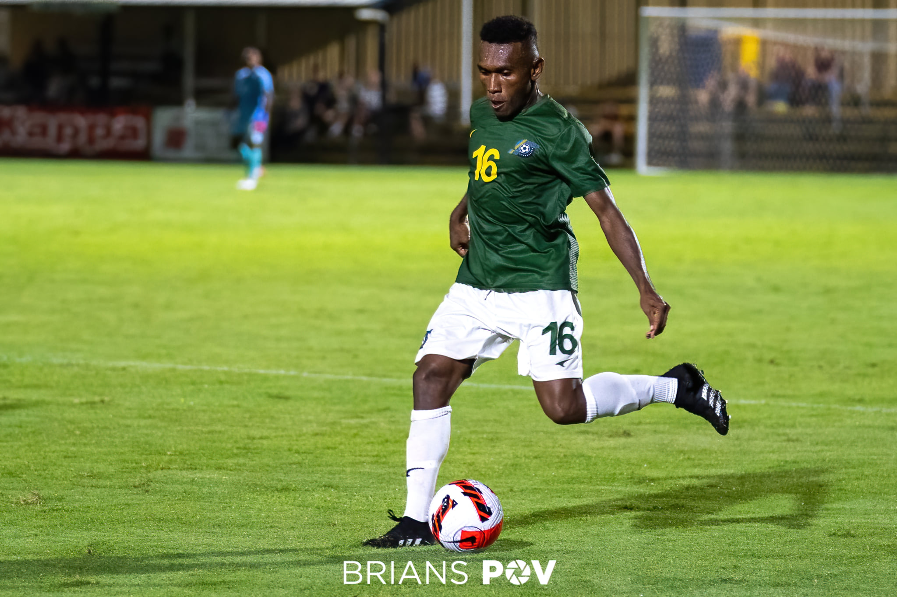 |
| William Komasi | Defensa | 25 |
William Komasi aporta energía y disciplina, siendo un elemento importante en la retaguardia. |
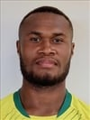 |
| David Supa | Defensa | 24 |
David Supa es un defensor joven con gran potencial y firmeza en los duelos individuales. |
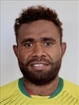 |
| Leon Kofana | Defensa | 23 |
Leon Kofana es un defensor con buena visión de juego y proyección hacia el mediocampo. |
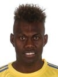 |
| Harold Nauania | Portero | 27 |
Harold Nauania es portero ágil, con buenos reflejos, pieza clave en el arco del equipo nacional. |
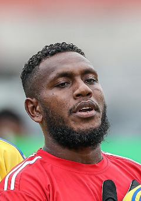 |
| Michael Laulae | Portero | 23 |
Michael Laulae es joven arquero con gran proyección, que aporta seguridad en la portería. |
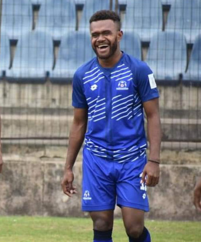 |
| Phillip Mango | Portero | 30 |
Phillip Mango es el portero titular de Islas Salomón, experimentado y líder dentro del campo. |
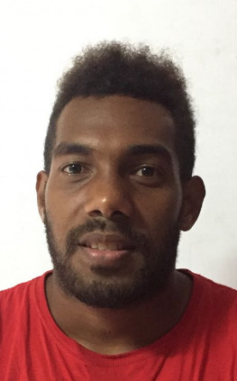 |